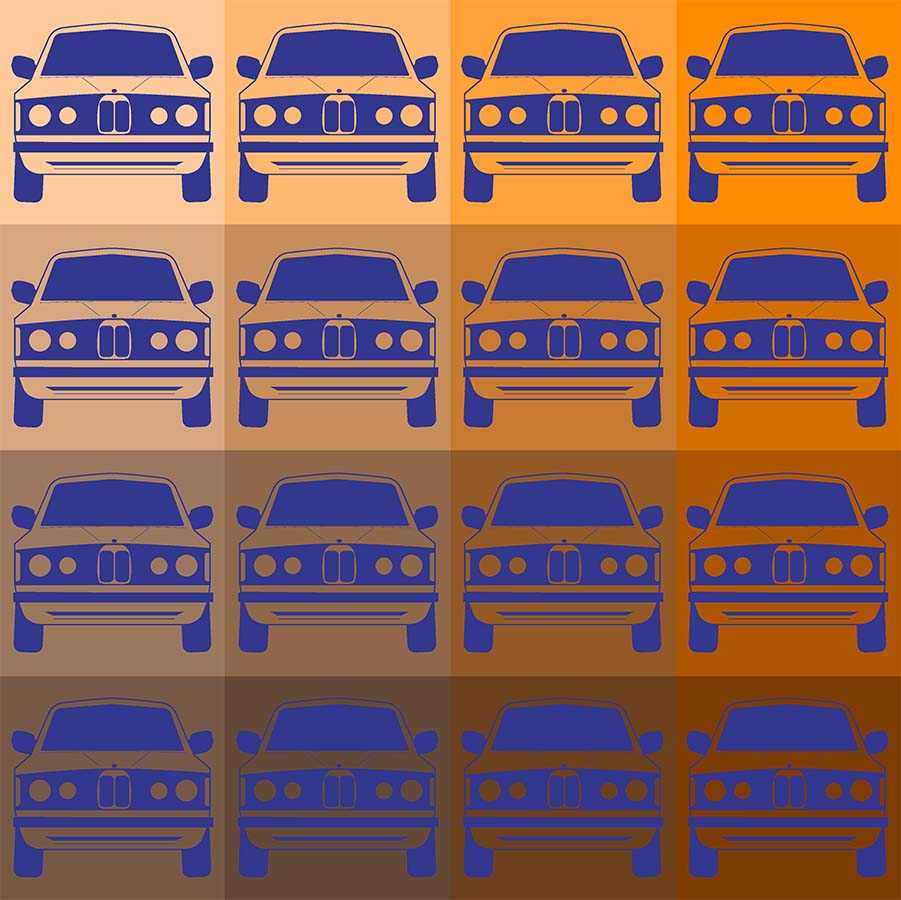
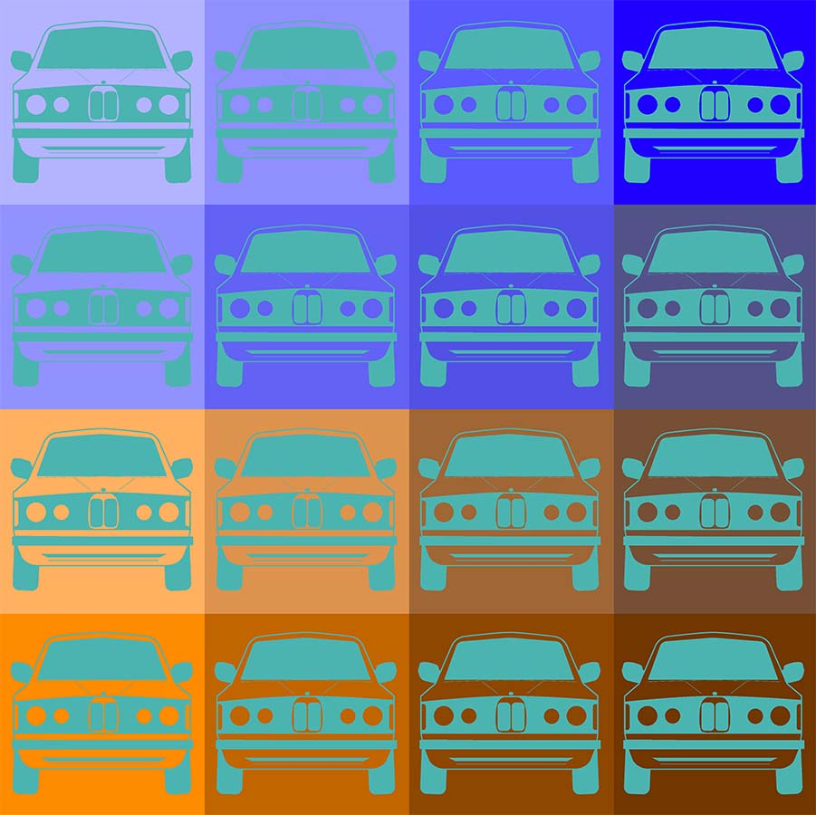
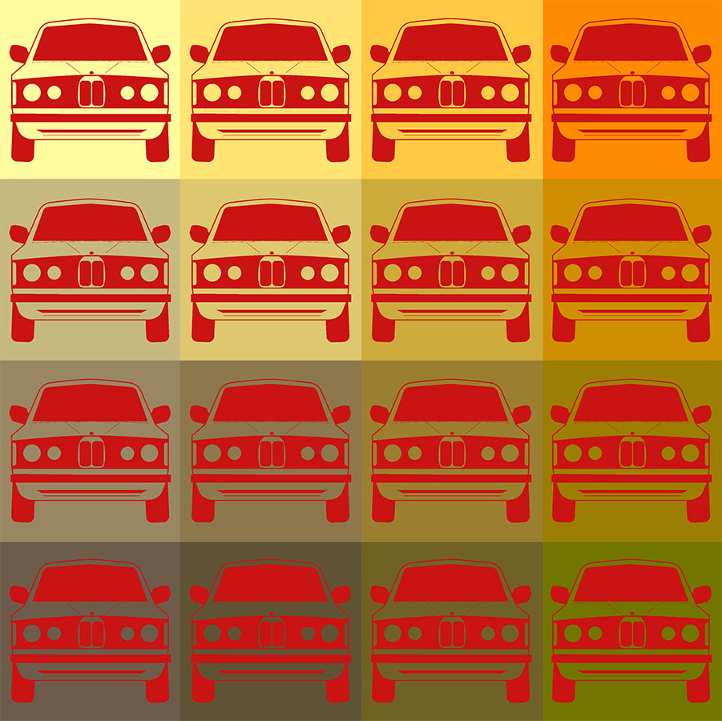

Design II Project 2
  In this project, we had to make a design in Adobe Illustrator, and then create a color grid based off of a complementary, split complementary, and analgous color schemes. I chose to recreate an old BMW, since it was symmetrically designed, making it work in the context of the assigment.